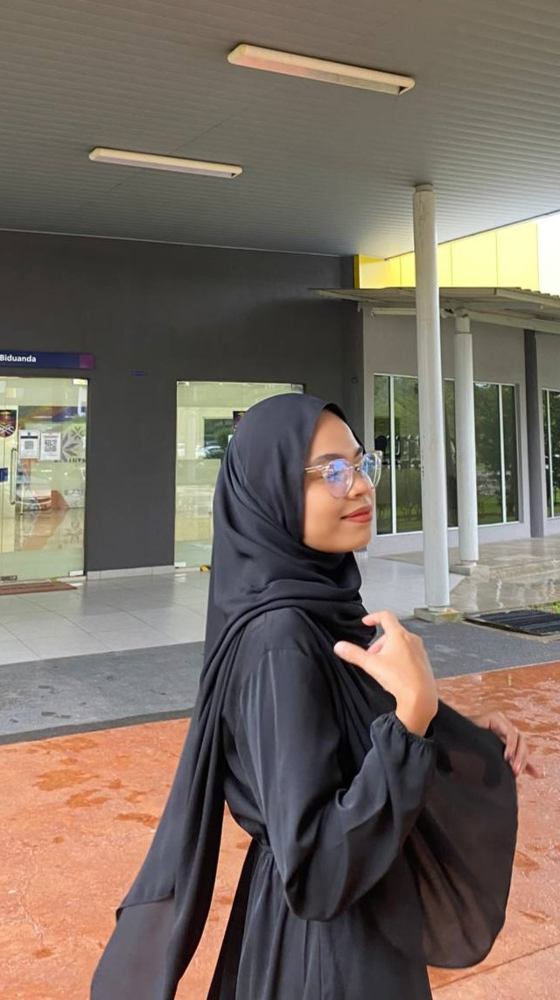
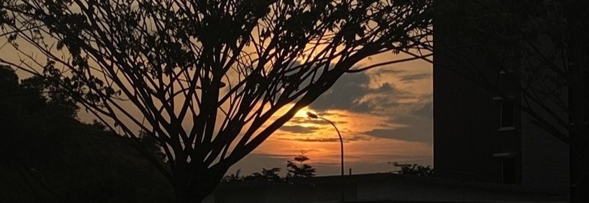
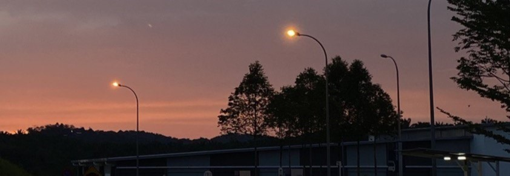

About Me
Biodata
Experience
Education
Skills
- Full Name
Nur Amissya Balqis Binti Amran - No. ID
020425-02-0196 - Id Student
2020473104 - Class
N5IM1105A - Mother's Name
Nor Aisyah Yaacob - Father's Name
Amran Abdul Razak - Birth Date
25th April 2002 - Birth Place
Hospital Besar Alor Setar, Kedah Malaysia. - Tel. Number
017-7751944 - E-mail
missyblqis@gmail.com - Home Address
F-07-07 Blok F Apartment Taman Medan Jaya, Jalan PJS 2/1 46000 Petaling Jaya, Selangor.
- 2012 - 2014
School Librarian of SKJS (1). - 2016 - 2019
School Prefect of Taman Petaling Girl High School. - 2020 - Current
Komander Kesatria UiTM Kampus Rembau.
- 2014
Ujian Pencapaian Sekolah Rendah (UPSR) - 2017
Pentaksiran Tingkatan 3 (PT3) - 2019
Sijil Pelajaran Malaysia (SPM) - 2009 - 2014
Sekolah Kebangsaan Jalan Selangor (1), Petaling Jaya. - 2015 - 2019
Sekolah Menengah Kebangsaan (P) Taman Petaling. - 2020 - Current
UiTM Cawangan Negeri Sembilan, Kampus Rembau
- Adobe Photoshop
90% - Adobe Premiere Pro
90% - Microsoft Excel
80% - Adobe Illustrator
90%
Family Members
Father
Amran
Mother
Aisyah
Second Sister
Aina Nafisa
Third Sister
Siti Humaira
Younger Brother
Hadif Uzair
Youngest Sister
Sumayyah
Gallery
"As the sun dips down over the horizon, sunlight has to pass through a thicker layer of the atmosphere compared to the daytime. This causes the blue light that is seen during the daytime to be scattered away from our eyes, allowing more orange and red light to pass through."-Duff
 
Fav Poem
She Walks in Beauty by Lord Byron.
"She walks in beauty, like the night
Of cloudless climes and starry skies;
And all that is best of dark and bright
Meet in her aspect and her eyes;
Thus mellowed to that tender light
Which heaven to gaudy day denies."
Back to Top